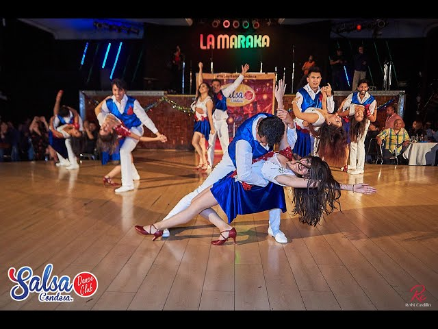

2017 Choreography
2017 Choreography
La Borrachera | Pupy y Los Que Son Son

2018 Rueda de Casino
Afloja La Guayaba | Maykel Blanco Y Su Salsa Mayor

2019 Choreography
De Cuba Pa'l Mundo Entero | Adalberto Álvarez Y Su Son

2019 Choreography
2022 Choreography